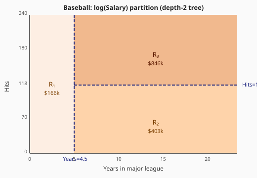
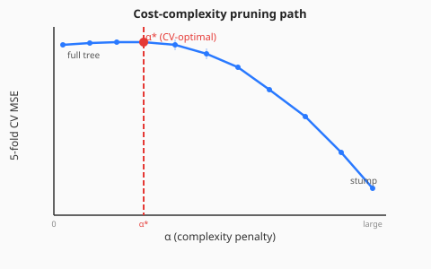
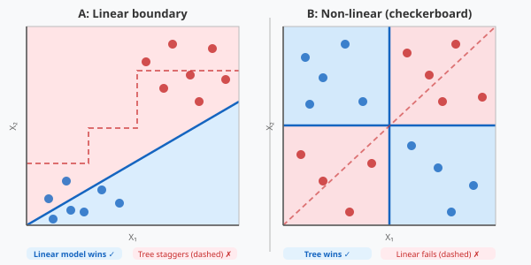

The most interpretable non-linear model
RSS splits, leaf means, baseball salary.
Gini, entropy, Heart + Carseats.
α penalty · K-fold CV.
when each wins.
variance → bridge to ensembles.
A single tree is the most interpretable model you'll meet. Every prediction is a flowchart. The weakness — variance — sets up Course 8's payoff.
recursive binary splitting · leaf means · RSS
min_samples_split rows (default 2).Prediction = mean of training responses in the leaf.
At each node, minimise:
RSSL(s) + RSSR(s)
RSSL = Σi: xj < s (yi − ȳL)² | RSSR = Σi: xj ≥ s (yi − ȳR)²
Predict log(Salary) from Years in the majors and Hits last year.

R₁: Years < 4.5 → mean log-salary ≈ 5.11 ($166k) | R₂: Years ≥ 4.5, Hits < 118 → 6.00 ($403k) | R₃: Years ≥ 4.5, Hits ≥ 118 → 6.74 ($846k)
Depth-2 tree → 3 regions. Each additional depth doubles the maximum number of regions.
Gini · cross-entropy · classification error
Node with 99 Yes / 1 No and node with 51 Yes / 49 No both have the same dominant class — but the second is much less pure.
Error rate = 1 − max(p̂k) is insensitive to this.
Gini and entropy measure the distribution, not just the winner. They reward splits that produce purer children.
| Measure | Formula (binary) | Max at p=0.5 |
|---|---|---|
| Classification error | 1 − max(p, 1−p) | 0.500 |
| Gini index | 2p(1−p) | 0.500 |
| Cross-entropy | −p log p − (1−p)log(1−p) | 0.693 |
G = 1 − Σk p̂mk²
DecisionTreeClassifier.D = −Σk p̂mk log p̂mk
criterion='entropy' or criterion='log_loss' in sklearn.AHD — diagnosed heart disease (Yes/No)Full unpruned tree achieves ~100% train accuracy but often poor test performance → needs pruning (Part 3).
Test error vs depth curve shows the classic U-shape: too shallow underfits, too deep overfits.
High = (Sales > 8)
Root split: ShelveLoc_Good — shelf location dominates all else.
Depth-3 tree is already competitive (~77% accuracy) and fully interpretable.
grow full · penalise size · CV to pick α
max_depth by hand — but how do you choose?Better: grow full, then prune by penalising tree complexity.
Cα(T) = Σleaves MSE(leaf) + α · |T|
sklearn: cost_complexity_pruning_path() returns all candidate α values.

Full tree · 100% train acc · overfits
Pruned tree · balances bias/variance
Root stump · predicts majority class everywhere
The pruned tree is usually much more interpretable than the full tree — and generalises better.
it depends on the true boundary

| Scenario | Linear model | Decision tree |
|---|---|---|
| Truly linear boundary | ✅ exact fit, low variance | ❌ many splits to approximate a line |
| Non-linear, axis-aligned | ❌ can't capture the pattern | ✅ few splits → exact partition |
| Interactions | ❌ need to specify them manually | ✅ nested splits automatically capture interactions |
| Interpretability | β-coefficients | flowchart — often more natural |
In practice: if the data is "close to linear," use linear models. Otherwise, try trees — or better yet, ensembles.
the variance problem → ensembles
Fit the same depth-3 tree on four different bootstrap samples of the same training data:
ShelveLoc_Good to Price to …High variance is the single biggest weakness. Ensembles fix it.
Average B independent trees on bootstrap samples → lower variance
Bagging + random feature subsets → decorrelated trees → even lower variance
Sequential trees each fitting the residuals → reduce bias
Single tree: interpretable but variable. Ensemble: accurate but a black box. Course 8 teaches you to navigate that trade-off.
ccp_alpha chosen by K-fold CV.